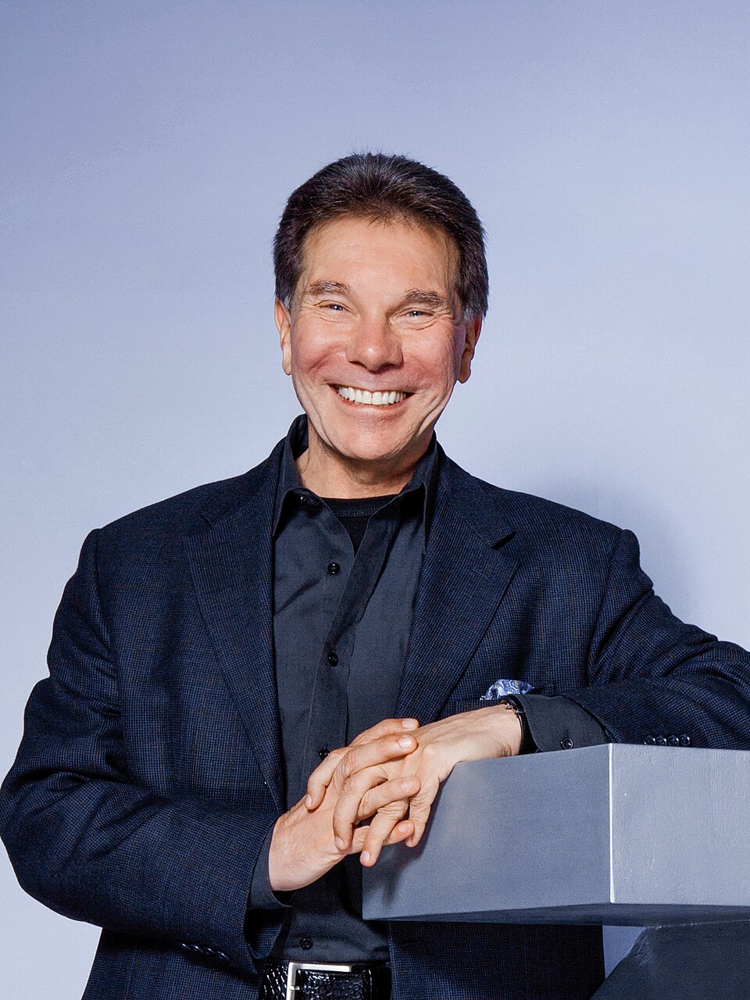

する側も、される側も、やってきて分かったこと
プロデュースの極意
任せる人・任される人が、長く組んで成果を出すために
岡崎かつひろ
作家・講演家
岡崎かつひろ
- 全国出版オーディション 主宰
- 出版企画書勉強会 主宰
- プロデュースする側もされる側も経験
はじめに
どちらも、理由は同じ。楽をしたいから
する側の楽
- 自分でコンテンツを作らなくていい
- やることは基本マーケティング
- 中身（人・テーマ）が変わっても
やり方は同じ
される側の楽
- コンテンツを出すことだけに集中できる
- 集客・販売など残りは
任せられるケースが多い
僕はどちらもやってきました。
今日は両方の本音をお話しします。
資料プレゼント
今日の内容は、話しきれません
完全版の資料を
LINE公式でプレゼントします
時間内に話せなかった部分も、全部入っています。
QRコードで友だち追加して、このキーワードを送ってください。
ゆうちゃん大好き
LINE ID：@okazaki_official
1 プロデュースとは何か
1人でビジネスをやると、2つの仕事を抱える
作るコンテンツ制作
- 講座・本・サービスの中身
- コンテンツを持っている人は
ここが得意
売る販売・プロモーション
- 集客・告知
- 申込から決済までの流れ
- 大変で、できればやりたくない
「売る」を得意な人に渡す。これがプロデュース
1 プロデュースとは何か
プロデュース＝役割分担
される側（コンテンツを持つ人）
作る
良いコンテンツを出すことに
集中する
＋
する側（プロデューサー）
売る
集客・販売・プロモーションを
組んで回す
プロデューサーが入るメリットは、
才能を足してもらうことではなく、役割を分けられること
1 プロデュースとは何か｜理論の裏付け
分業の力：アダム・スミスのピン工場
- 『国富論』（1776年）の有名なたとえ話
- ピンを作る工程を18に分け、10人で分担すると1日4万8,000本以上作れた
- 1人ですべてやると、1日20本も作れないだろうと書いている
- 得意な人が得意な工程に集中すると、全体の成果は何倍にもなる
「作る」と「売る」を分けるのは、手抜きではなく成果を最大にする方法
1 プロデュースとは何か｜理論の裏付け｜名言
“
マーケティングの目的は、
販売を不要にすることである。
ピーター・ドラッカー経営学者
『マネジメント』より（要旨）
「売る」は、そこだけで1つの専門分野。だから得意な人に任せる価値がある
2 される側をやってみて
良かったこと、もどかしかったこと
良かった
- 良いコンテンツを出すことだけに
集中できた
- 苦手な「売る」を考えなくてよかった
もどかしかった
- 集客を任せると、自分の手が届かない
部分が増える
- 思うように進まず、やきもきした
- 「もっとこうすれば」と思っても、
関係性を考えると言いにくい
2 される側をやってみて
口を出すと、どうなるか
→
うまくいかないと
言い訳が生まれる
「言う通りにやらなかったから」
→
だから
100%任せる
プロデューサーの言うことを
そのままやるのが大前提
任せきるなら、任せる相手を間違えられないされる側の極意＝誰に頼むかがいちばん大事
2 される側をやってみて｜名言
“
最初に人を選び、
その後に目標を選ぶ。
ジム・コリンズ経営学者
『ビジョナリー・カンパニー2 飛躍の法則』より
何をやるかより先に、誰とやるか。プロデューサー選びも同じ
3 する側に回ろう
今日の提案：プロデュースする側へ
提案する側に回る
- 自分でコンテンツを作らなくていい
- 組み立て方は、中身が変わっても同じ
- 一度身につけると何度でも使える
ただしされる側も経験する
- 任せたときのもどかしさ
- 言いたいことが言えない気持ち
- これが分かるプロデューサーは強い
いま「される側」の人も、その経験はムダにならない
3 する側に回ろう
する側の現実：回収は立ち上げの後
- プロデュースは立ち上げがいちばん大変
- 利益を回収できるのは、しっかり立ち上がった後
- いちばん困るのは、長く一緒に仕事ができないこと
- 「長く続けてほしい」と言われる関係と、提供し続ける仕組みが要る
コンテンツを作るのとは、また違う大変さがある
3 する側に回ろう｜理論の裏付け
顧客維持の法則：続くほど利益が出る
📈
フレデリック・
ライクヘルド
ベイン・アンド・カンパニー
- ライクヘルドらの研究：顧客の維持率を5%上げるだけで、利益が25〜95%増える
- 新しいお客様を集めるのは、今のお客様に続けてもらうより何倍もお金がかかる（よく「1：5の法則」と呼ばれる）
- つまり、利益の多くは「続いた後」に生まれる
プロデュースも同じ。長く続く関係をつくれるかで、回収できるかが決まる
4 売る仕事の全体図
セールスファネル：4つの段
← 極意① 役に立つ×面白い
知ってもらう。いちばん広い入口
← メールを必ず取る
こちらから届けられる関係をつくる
手に取りやすい最初の商品
体験してもらい、信頼を深める
← 極意② ウォンツ×ニーズ
ここで利益が出る。今すぐ客に売る
4 売る仕事の全体図
ファネルの上部ほど具体性が求められる
| 段 | 相手の状態 | 求められること |
|---|
| 上（拡散） | まだ興味がない | 「何が得られるか」が一目で具体的に分かること。
分からないと素通りされる |
| 中（リスト・フロント） | 少し興味がある | 続きを受け取りたい、試してみたいと思える理由 |
| 下（バックエンド） | すでに興味がある | 深い話ができる。本気で変わりたい人に応える中身 |
プロデューサーが引き受けるのは、このファネル全体を組んで回すことだから扱うコンテンツが変わっても、やることは同じ
4 売る仕事の全体図｜名言
“
平均すると、見出しは
本文の5倍の人に読まれる。
デイヴィッド・オグルヴィ「広告の父」と呼ばれた広告人
『ある広告人の告白』より（要旨）
入口で伝わらなければ、その先は読まれない。だから入口ほど具体的に
5 極意① 本人が本気になる状況をつくる
「任せる」と「お任せ」は別物
○任せる
- 売り方はプロデューサーの
言うとおりにやる
- 自分の持ち場には本気で取り組む
×お任せ
- 「プロデューサーがついたから、
あとはよろしく」
- 自分の持ち場まで手放してしまう
お任せになった瞬間、うまくいかなくなる
5 極意①｜理論の裏付け
コミットメントと一貫性の原理

ロバート・チャルディーニ社会心理学者
- 『影響力の武器』で紹介された原理
- 人は一度「やる」と自分で決めて表明すると、その決定に沿って行動し続けようとする
- あわせて「IKEA効果」（行動経済学者ノートンらの研究）：自分で手を動かして作ったものほど、価値を高く感じる
- 「お任せ」は、本人が自分で決める場面も、手を動かす場面も奪ってしまう
本人が自分で決め、自分の持ち場で手を動かす。それが本気を生む
5 極意① 本人が本気になる状況をつくる
広告だけでは、人は集まらない
広告は外せない。でも広告だけで集客できるのは、よほど尖ったコンテンツだけ
- SNSでの発信は本人にしかできない。プロデューサーが代わりに書いても信用は生まれない
- SNSで売れたからと広告だけに乗り換え、発信をやめた人はうまくいかなくなる
役割分担しても「信用を積む」仕事は本人の手元に残る
5 極意①｜理論の裏付け
人は買う前に「調べる」
- ZMOT（Google 2011年）：お客様は広告を見てから買うまでの間に、ネットで調べて判断している
- 単純接触効果（心理学者ザイアンス 1968年）：人は、何度も目にするものに好意を持ちやすい
- 広告は「知ってもらう」きっかけ。信用は、調べた先の発信と、くり返しの接触で生まれる
調べた先に、本人の発信がたまっているか。ここは本人にしかつくれない
5 極意① 本人が本気になる状況をつくる
集客は「役に立つ×面白い」で判断する
▲役に立つ
役に立つ だけ
人が集まらない
内容は正しいのに
入口で素通りされる
面白い だけ
集まるが
つながらない
リストや商品に進まない
面白い（楽しい） ▶
- 役に立つだけだと売れない、というよりそもそも人が集まらない
- ファネルのいちばん上は、面白さがないと入口にすら立ってもらえない
- 本人の発信が「役に立つ×面白い」になっているか。ここも本人の持ち場
5 極意①｜理論の裏付け
なぜ「あれ」は広がるのか
ジョーナ・バーガーペンシルベニア大学 教授
- 『なぜ「あれ」は流行るのか』で、広がる情報の6つの原則を示した
- その中に「実用的価値」（役に立つ）と「感情」（心が動く）がある
- バーガーらがニューヨーク・タイムズの記事を分析した研究では、感情を強く動かす記事ほどよくシェアされていた
- 役に立つだけでは、人に教えたくなるほど心は動かない
「役に立つ」に「面白い」が重なったとき、人は集まり、広がる
6 極意② 長く戦えるコンテンツを選ぶ
強いコンテンツ＝ウォンツとニーズを両方つかむ
▲ウォンツ（快）
ウォンツ × ニーズ
今すぐ客
バックエンドはここに売る
ニーズ だけ
困っているが
動かない
お金を払う気持ちまで
いかない
ニーズ（不快） ▶
- ウォンツ＝強烈な「こうなりたい」という願望（快を得たい）
- ニーズ＝強烈な困りごと（不快を避けたい）
- 両方を解決する手段を持っていること＝商品力
- フロント商品やリストへの案内で、片方しかない人を両方そろった状態に育てていく
6 極意②｜理論の裏付け
快・不快の法則
ジェレミー・ベンサム哲学者アンソニー・ロビンズコーチ・作家
- 人は快を得たい、不快を避けたいという2つの力で動く。とてもシンプルだが、とても強力
- ベンサム「自然は人類を、苦痛と快楽という2人の君主の支配のもとに置いた」（『道徳および立法の諸原理序説』1789年）
- ロビンズも著書や講演で、人の行動は「苦痛を避けたい」「快楽を得たい」の2つで決まると説いている
ウォンツ＝快、ニーズ＝不快。お客様に両方とも感じてもらうことが大事
6 極意②｜理論の裏付け
不快は、快の約2倍強く感じる
ダニエル・カーネマン心理学者・ノーベル経済学賞
- プロスペクト理論（カーネマンとトヴェルスキー 1979年）
- 同じ金額でも、失う痛みは、得る喜びの約2倍強く感じる（損失回避）
- 「こうなりたい」だけでは、人はなかなか動かない
- 「このままだと困る」という不快が重なったとき、今すぐ動く理由が生まれる
快だけでも、不快だけでも弱い。両方そろった人が「今すぐ客」になる
6 極意② 長く戦えるコンテンツを選ぶ
長く続けられるか（エバーグリーンか）
基本長く続けられるテーマ
- 今しかできないものは、回収に入る前に終わってしまう
- 例：全国出版オーディション、出版企画書勉強会
＝長く続けられると判断して選んだ
例外短期でも引きが強いもの
- 例：クロードコード。AIエージェントが広まるには時間がかかるので比較的長くやれそう。ただ今ほどの引きの強さは、いずれ落ちる
- 目的は単発の利益ではなくリストを一気に集めること
選び方は2つ① 長く続けられるテーマを探す ② 短期でも、リストを一気に集められるものを攻める
6 極意②｜名言
“
「10年後に何が変わるか」はよく聞かれる。
でも「10年後も変わらないものは何か」は
ほとんど聞かれない。
本当に大事なのは、後のほうだ。
ジェフ・ベゾスAmazon 創業者
2012年の講演より（要旨）
変わらないものの上に立てた事業は、長く戦える
6 極意②｜理論の裏付け
リンディ効果：長く続いたものは、これからも続く
ナシーム・ニコラス・
タレブ思想家・元トレーダー
- タレブが『反脆弱性』などで広めた考え方
- 本やアイデアのように朽ちないものは、これまで長く残ってきたものほど、この先も長く残りやすい
- 流行りものは、引きは強いが寿命が短い
- 「出版」や「企画書」のように昔から求められてきたテーマは、これからも求められる
長く続けられるテーマを選ぶ。短期のテーマは、リストを集める目的で攻める
7 リストはメールを必ず取る
メールアドレスは固定の住所
| LINE公式・SNS | メール |
|---|
| 変わりやすさ | 変わっていく | 今はアドレスをコロコロ変える人がいない |
| 届かなくなる | ブロックされたら届かない | 手元のリストから送り続けられる |
| アカウント停止 | 止められたら一瞬でゼロ | 配信業者に追い出されても、リストは自分の手元に残る |
原則は両方取る。ただし長くやるなら、メールは必ず取る
7 リストはメールを必ず取る｜名言
“
パーミッション・マーケティングとは、
受け取りたいと思っている人に、
期待され、個人的で、関連のあるメッセージを
届ける特権である。権利ではない。
セス・ゴーディンマーケター・作家
『パーミッション・マーケティング』の考え方より（要旨）
「届けていいですよ」という許可がリスト。その許可を、自分の手元に持っておく
まとめ
今日のおさらい
| プロデュースとは | 役割分担。「作る」と「売る」を分ける |
| される側の極意 | 相手を選んだら、100%任せる。だから誰に頼むかがいちばん大事 |
| 売る仕事の全体図 | 拡散 → リスト獲得 → フロント → バックエンド。上部ほど具体性 |
| する側の極意① | 本人が本気になる状況をつくる。集客は「役に立つ×面白い」 |
| する側の極意② | 長く戦えるコンテンツを選ぶ。バックエンドは「ウォンツ×ニーズ」の今すぐ客へ |
| リスト | メールは固定の住所。必ず取る |
プロデュースは、長く続いて初めて実る
最後に｜理論の裏付け
ハロー効果と権威の原理
ロバート・チャルディーニ社会心理学者
- ハロー効果（心理学者ソーンダイク 1920年）：目立つ1つの特徴が、その人全体の評価を引き上げる
- 権威の原理（チャルディーニ『影響力の武器』）：人は専門家・権威とみなした人の話を信じやすい
- 「本を出している」は、その両方を一度に満たす
調べた先に本がある。それだけで、信用の積み上がり方が変わる
最後に
本人にしか積めない信用の決定版＝出版
信用調べた先に本がある
- 広告で知る → SNSで調べる → 信用する
- 調べた先に本があると、信用が一気に上がる
- 本は何年も売れ続ける、長く戦えるコンテンツ
経験される側を体験できる
- 出版は、編集者というプロデューサーと
組んで1冊つくる仕事
- 「一度はされる側を」の実践の場になる
出版の第一歩は、企画書から
ご案内
出版企画書勉強会
企画書が書ける、
あなたになりませんか？
毎月1回、出版社・編集者をゲストに迎える勉強会。
企画書を提出すると、編集者に共有されます。
3ヶ月無料 その後は月3,850円（税込）
お申し込みは、LINE公式のメニューから
ありがとうございました
プロデュースの極意
完全版の資料は、
LINE公式でお受け取りください
岡崎かつひろ
写真の出典
写真：Wikimedia Commons
アダム・スミス：作者不詳（パブリックドメイン）
ピーター・ドラッカー：Jeff McNeill（CC BY-SA 2.0）
ジム・コリンズ：Ijon（CC BY-SA 4.0）／一部を切り抜き
デイヴィッド・オグルヴィ：Advertising Hall of Fame
ロバート・チャルディーニ：Viktorbuehler（CC BY-SA 3.0）
ジョーナ・バーガー：Jonah Berger（CC BY-SA 3.0）
ジェレミー・ベンサム：Henry William Pickersgill（パブリックドメイン）／一部を切り抜き
アンソニー・ロビンズ：Randy Stewart（CC BY-SA 2.0）
ダニエル・カーネマン：nrkbeta（CC BY-SA 2.0）
ジェフ・ベゾス：米国国防総省（パブリックドメイン）
ナシーム・ニコラス・タレブ：Sarah Josephine Taleb（Attribution）
セス・ゴーディン：Joi Ito（CC BY 2.0）